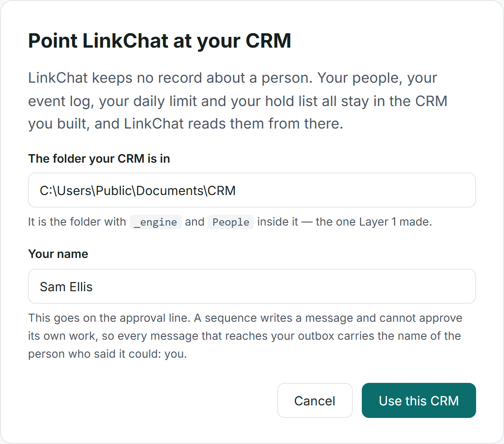
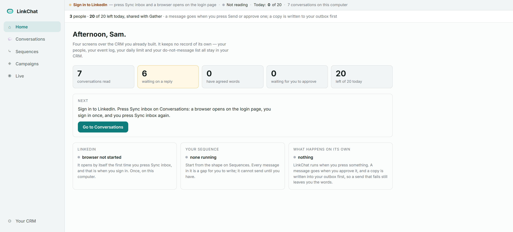
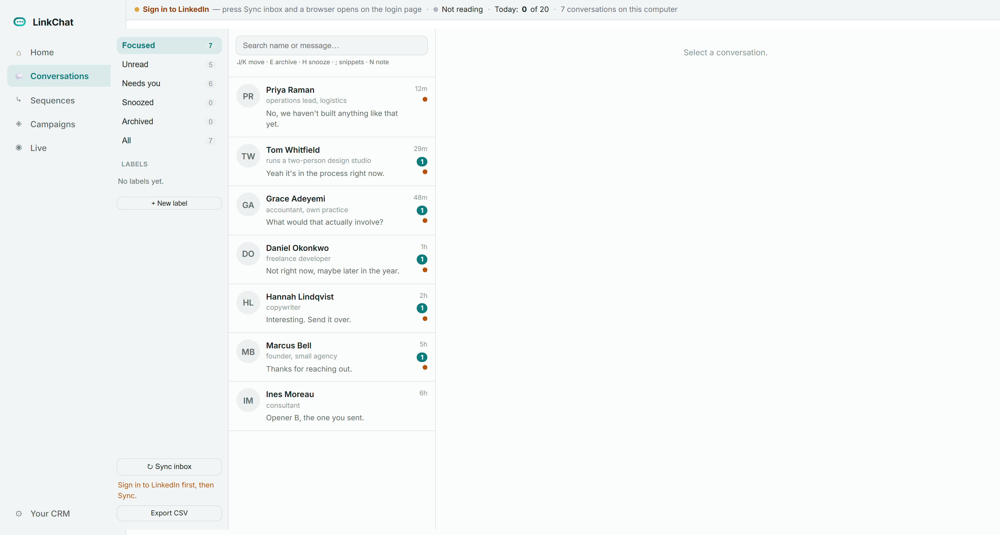
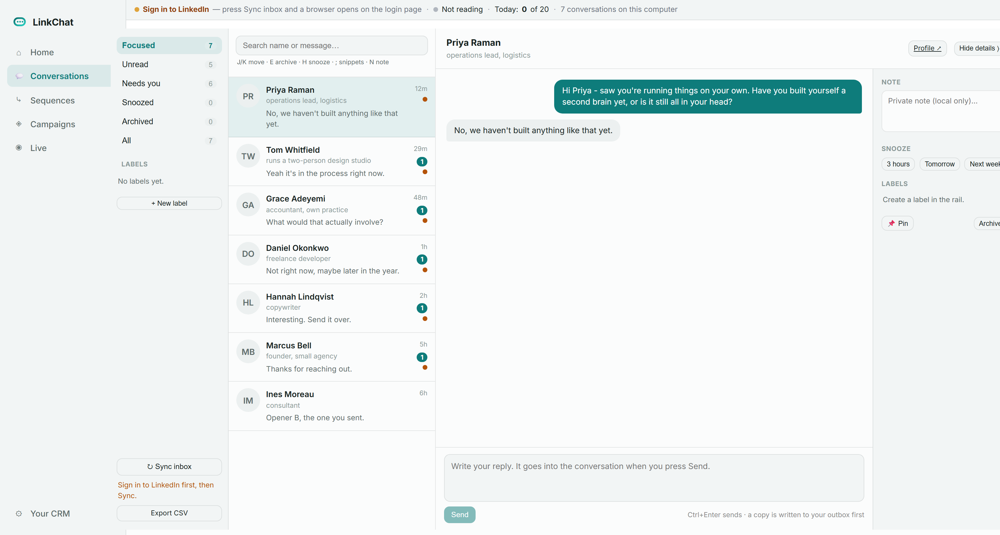
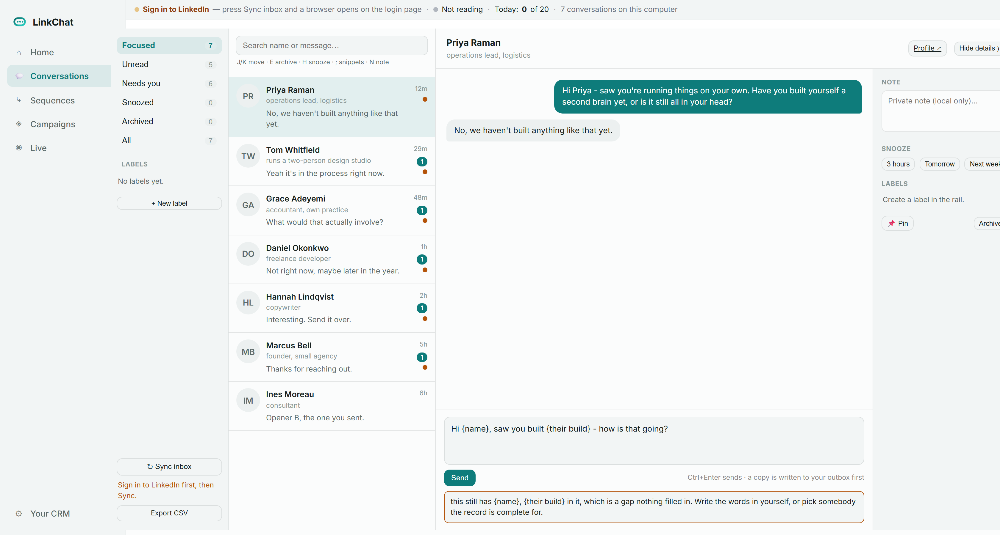
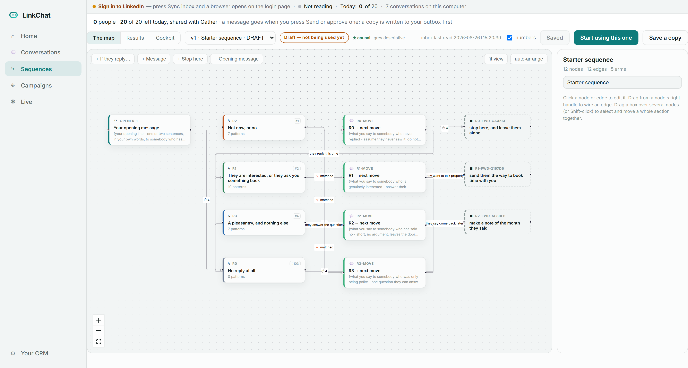
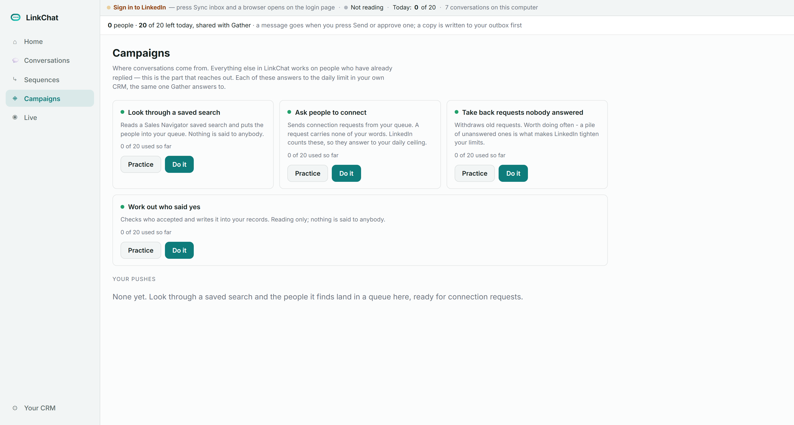
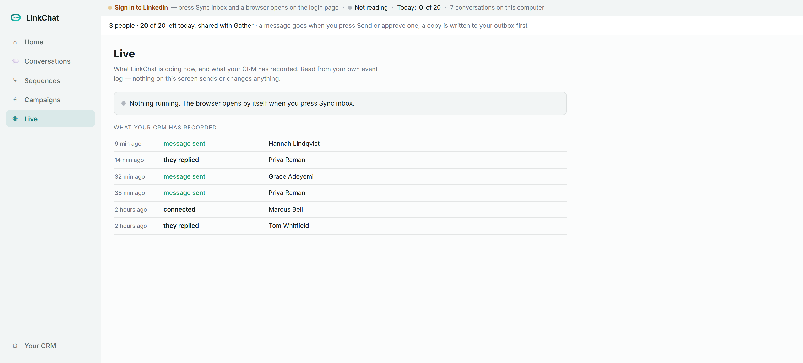

Your LinkedIn conversations, and the sequences that run off them, on your own computer — reading and writing through the CRM you already built.
LinkChat is four screens over the CRM you built in Sessions 0 to 2. It reads your LinkedIn inbox onto this computer, shows you what is waiting, and carries a message into a conversation once you have approved it.
The part worth understanding first is what it does not hold. LinkChat keeps no record about a person. Your people, your event log, your daily limit and your do-not-message list all stay in your CRM, and LinkChat reads them from there through one file. Point it at a different CRM and everything it knows changes, because it knew none of it.
That is why there is nothing to export if you stop using it, and why two copies of LinkChat pointed at one CRM cannot disagree about who you have messaged today.
LinkChat runs when you press something. There is no clock in it and no job waiting to fire while you are away. A message goes when you press Send or approve one, and a copy is written into your outbox before it is carried, so a send that fails still leaves you the words.
Four things. Two you already have if you finished Session 2. The whole list is here so nothing arrives as a surprise halfway through.
_engine and People inside it. LinkChat reads your daily limit, your do-not-message list and your records from there. No cost.
Everything works the same, with one difference: you run
setup-mac.command rather than setup.cmd,
and where this document says python you type
python3. The Mac installer builds LinkChat its own private
Python inside the LinkChat folder, because the Python a Mac ships with refuses
to have anything installed into it.
Open a terminal. On Windows press the Start button, type cmd, and press Enter. On a Mac press Command and Space, type Terminal, and press Enter. Every line below is typed there, one at a time, pressing Enter after each.
Copy the program down.
cd %USERPROFILE%\Documents git clone https://github.com/ashleydeansmith/linkchat.git LinkChat
On a Mac the first line is cd ~/Documents instead. You now have a folder called LinkChat inside Documents.
If that second line comes back saying the repository could not be found, the copy you were pointed at is not open to you. Say so — it is one setting at the other end, not something wrong with your computer.
Run the installer. Open Documents\LinkChat in File Explorer and double-click setup.cmd. On a Mac, double-click setup-mac.command.
It prints four lines as it goes and takes about five minutes, most of it downloading the browser. It ends with a LinkChat icon on your desktop.
Double-click the icon. LinkChat opens in its own window and asks where your CRM is.
In the terminal, move into the folder and ask the program what it can see:
cd %USERPROFILE%\Documents\LinkChat python doctor.py
It reports which computer this is, which installer belongs to it, which Python
you have and whether it is one of the two impostors, which parts are installed,
whether the browser downloaded, and whether it has been pointed at a CRM — then
one line saying what to do next. It looks only: it installs nothing, changes
nothing and sends nothing. On a Mac the line is python3 doctor.py.
Asked once, the first time you open it. Two boxes.

If your CRM has not reached Layer 6, LinkChat opens anyway and reads everything. It will not send until Layer 6 is installed, and it says so on the screen rather than refusing to open. Nothing is broken; it turns on by itself when the layer is there.
Eight parts of your CRM, by name: the part that checks a message before it goes, your do-not-message list, your daily limit, your event log, your review step, the part that works out that one person is one person, the part that knows where your folders are, and the lock that stops two jobs driving the browser at once. Any that are missing are named on the screen, and what LinkChat can do shrinks to match — rather than failing at the moment you press something.
What is waiting, and one next step — not a list of options, one step, worked out from what is actually true right now.

The five counts are read live. Waiting on a reply is the one that matters most days: conversations where they said something last and you have not answered. Have agreed words counts the ones your sequence recognises and has a message ready for. Waiting for you to approve is the review step — a sequence has written something and cannot release it itself.
Your LinkedIn inbox, read onto this computer. Pressing Sync inbox is also what opens the browser the first time, and that is where you sign in — once, on this computer.


Every message takes one road out, whoever wrote it. Five things have to be true before a single character reaches anybody.
{name} is the single most obvious way a message announces that nobody wrote it. It is refused, and the gap is named.
There is a sixth for a message a sequence wrote: it goes to the review step in your CRM, and a sequence cannot release its own work. That is why the setup panel asked for your name.

{name} and {their build} in it, so
it was refused and the gaps were named. A check that refuses is the check
working. Nothing was sent, and nothing was lost — the words are still in
the box.
What you say when somebody replies, and to which kind of reply. Press Start from the shape and you get this rather than a blank canvas.

Nothing in the starter shape contains words you could send. Every message body is something for you to write, and check three above physically refuses to send a message with a gap left in it. Handed real copy, you could send five messages you had never read. This way you cannot.
The two groups that feel like failures are the two largest. No reply at all and a pleasantry and nothing else are where most people end up, and they are where a written answer is worth the most, because at the moment you have none.
A branch matches on patterns — short pieces of what somebody actually wrote. Three characters is the shortest a pattern may be. When nothing matches, the conversation is off the map and LinkChat proposes nothing at all, which is the right answer: a sequence that always has something to say is a sequence that is guessing.
Where conversations come from. Everything else works on people who have already replied — this is the part that reaches out.

Each one reads the same daily limit in your CRM that Gather reads — the line under each job, 0 of 20 used so far, is that number. There is no second set of counts anywhere in LinkChat.
LinkedIn counts the account, not the program. Two programs each keeping their own tally is how both stay inside a limit while the account goes over it. So LinkChat keeps none of its own, asks yours, and refuses when it cannot read it. A limit that cannot be consulted is not an absent limit.
One consequence worth knowing: the limit is shared across all four jobs and your messages. Message twenty people and reading a saved search will refuse too, until tomorrow.
What LinkChat is doing now, and what your CRM has recorded. Read from your own event log — nothing on this screen sends or changes anything.

An entry naming no person means the record could not be matched to somebody in your CRM at the moment it was written. It is shown rather than hidden, because a screen that quietly drops what it cannot explain is a screen you cannot trust about anything else.
Open a terminal, move into the folder, and run the doctor:
cd %USERPROFILE%\Documents\LinkChat python doctor.py
The most common cause is Python being installed without Add python.exe to PATH ticked. The doctor says so in those words.
Go to Conversations and press Sync inbox. That is what opens it. A window appears on the LinkedIn login page, and it can open behind the LinkChat window, so check your taskbar. Sign in once, come back, press Sync inbox again.
Read the sentence it gives you: it names which of the five checks refused and why. A check that refuses is the check working. Do not look for a way around it.
Close LinkChat, move the file it names somewhere else, and open LinkChat again. It builds a new one and reads your inbox back in. Your people, your outbox and your records are separate files and are untouched.
cd %USERPROFILE%\Documents\LinkChat git pull
Your CRM is a different folder, so nothing you have written is touched by that.
The whole program is there and you can change any part of it. A file called
CLAUDE.md in the folder is read by Claude Code on its own,
and is mostly a list of what must never be changed: none of the five checks may be
weakened, widened or worked around, and the file that talks to your CRM is not to
be edited. A fix that seems to need one of those loosened is the point to stop and
ask.